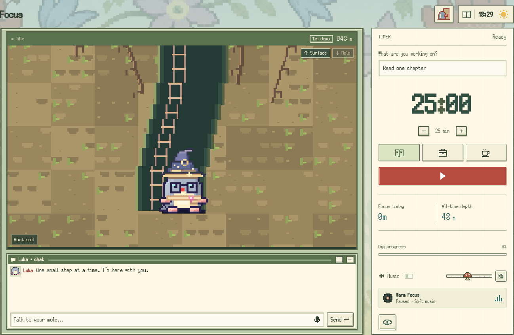
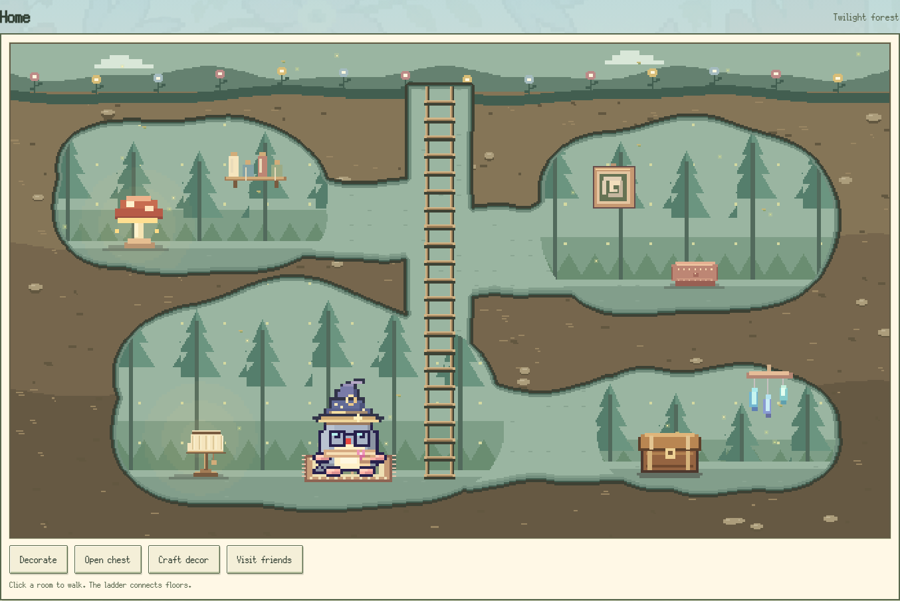

A little focus.
A little world.
A desktop companion that turns time spent
on your task into a world of your own.
WINDOWS
MAC✳
What if focusing felt
like coming back?
Starting alone.
The work is there.
The momentum isn’t.
Breaking the streak.
A rigid routine can make
an interruption feel like failure.
Seeing your effort.
A little progress you can
keep, collect and come back to.
For people who prefer gentle encouragement. Pomodoro is a timing method; it is not inherently punitive.
A companion
for the
solo desk.
Young-adult students and early-career workers doing self-directed work on a computer.
“Help me begin.
Then let me work.”
A task feels hard to start.
Quiet company, at the edge of the screen.
Keep the progress. Make the world yours.
Four ideas.
One calmer desk.
Design hypotheses, not claims that Eumo improves learning. Source verification and product testing remain separate.
Time tools. Pet worlds.
A place between.
Pomodoro
timers
A rhythm for work
and breaks.
Forest
Time becomes
something to grow.
Focusmate
Work alongside
another person.
Finch /
Spirit City
Care, atmosphere
and a personal world.
Eumo
Quiet desktop company.
A world shaped by effort.

Qualitative positioning, not a feature or efficacy ranking. Tamagotchi inspires the relationship with a small, persistent character.
You focus.
We dig.
Choose a task. Start a session. Your mole works alongside you.

Current product · illustrative demo saveLess friction.
More ownership.
Paraphrased themes, not verbatim interview quotes. Sample size and study protocol were not recorded in the supplied feedback.
More real progress.
Not just more hats.
Did it help you
do your task?
The key question for our next study.
Time from opening Eumo to starting a task.
Self-reported task progress, alongside timer data.
Repeat use without pressure or reward chasing.
Next: observed usability sessions + a short diary study. These are proposed measures, not achieved results.
Eumo,
out in the world.


Colorway visualizationA little company.
Anywhere you go.
Tap the keychain with a compatible phone to open its programmed link.
Working electronic prototype. Shown here as an enclosure visualization.
Make focus accessible.
Make expression valuable.
A useful
free core.
Focus, pause and keep your progress.
Subscription
+ cosmetics.
Explore optional benefits, skins and themed worlds.
A companion
you can carry.
Test demand for keychains and a small handheld.
A working world.
A lot left to learn.
Working
prototypes.
Web + desktop.
NFC link + timer/dig handheld.
Watch people
use them.
Test starting, decorating,
rewards and friend visibility.
Refine what
earns its place.
Fix friction. Check retention.
Test paid value and hardware demand.
Let’s make
a little progress.
One task. One companion.
A world you can make your own.
Start a task.Meet your mole.
Focus → discover.Explain active time and rewards.
Dress up. Make a home.Move, decorate and put things away.
Quiet company.Music, friends and the floating companion.
Small steps.
Something to keep.
EUMO — a little companion for the things you want to do.
EUMO / VG